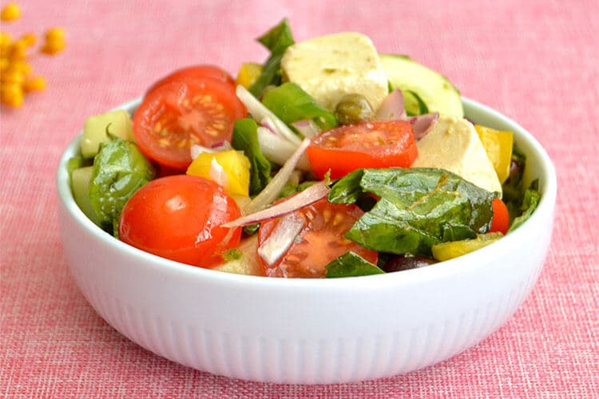
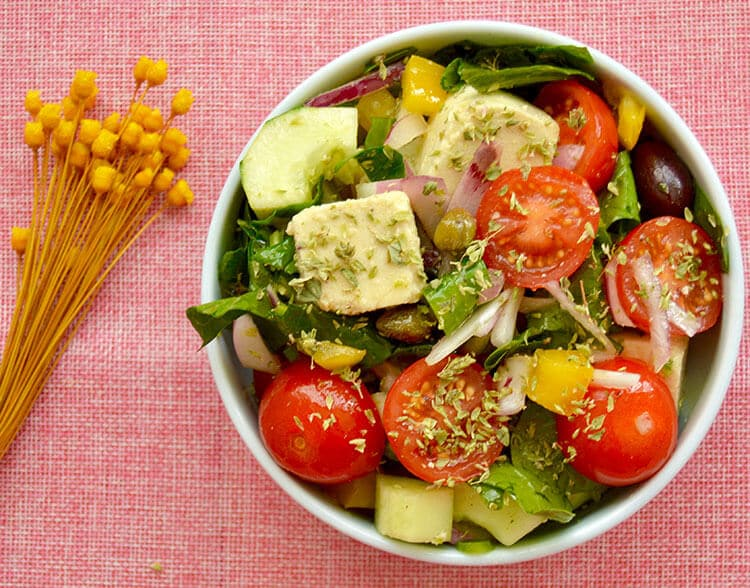

Ensaladas: Ensalada vegana Griega
Ingredientes
- 1 cebolla roja laminada
- ½ pimiento amarillo cortado en cubitos no muy finos
- 1 puñado de espinacas frescas laminadas
- 1-2 cucharadas de aceite de oliva virgen extra
- ½ limón exprimido
- Sal y pimienta al gusto
- 10-12 tomates cherry cortados por la mitad

Las verduras de la ensalada Griega
Preparacion
- Lava y corta los ingredientes que se detallan más arriba
- Introdúcelos en una ensaladera y añade el aceite, el limón la sal, la pimienta y el orégano antes de servirla.
- Si no vas a comerla al momento, consérvala en la nevera bien tapada y aliña al momento de servirla.
- Esta ensalada se conserva un par de días en la nevera, bien tapada y sin aliñar, ya que al hacerlo se ablandarán los ingredientes.

La ensalada ya servida